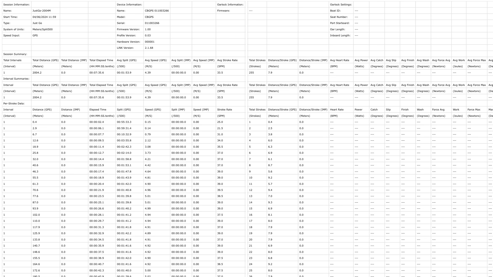
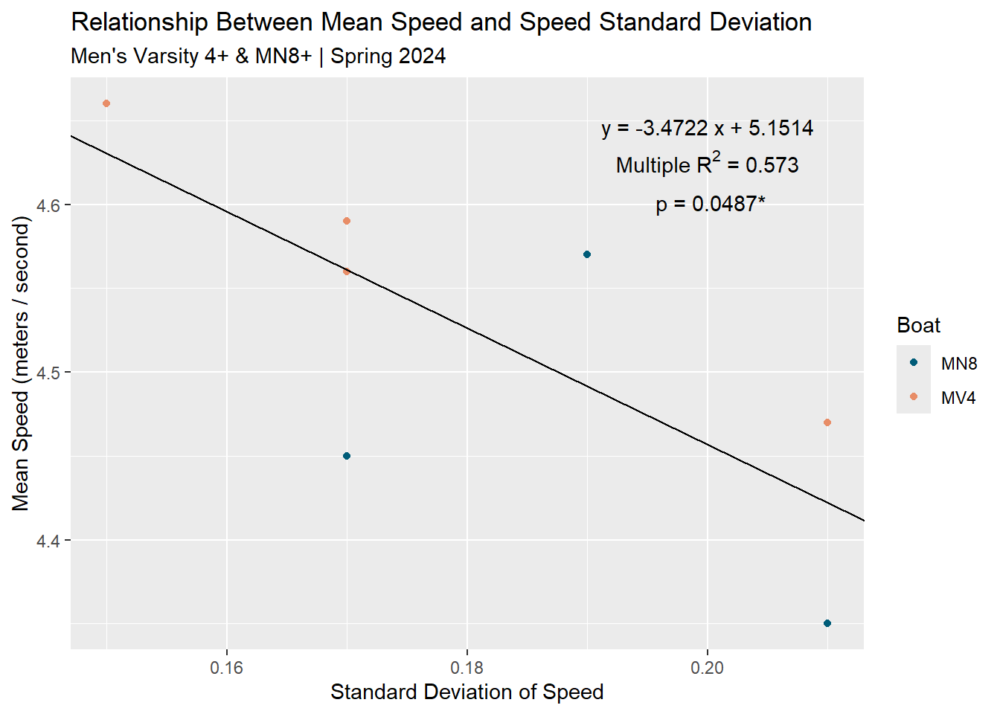

Data Processing: Water
Zach Hedeen
2024-06-12
1. CSVs and Averages Offer some insight
The CSVs we can get from the NK Link Logbook have a wealth of information, but they aren’t very readable as is. We can see the cumulative information for each metric in the top lines, which can be good for a representation of the piece, but with 200 - 250 strokes in a 2K race, it is far from telling the full story. We can look further down the table, but unless we’re looking for the metrics for a particular stroke, there’s not a lot we can glean. We need to process the whole story into a more readable form.

2. Packages
Utilizing only a couple R packages, we can derive strong insights from the data we collected.
library(tidyverse) # To make sure we have everything we need to clean and visualize
library(gt) # For the summary table
library(gtExtras) # For the table theme3. Loading Water Data into R, Adding Meta-Data
In order to examine multiple sessions or races at once, it’s beneficial to include meta-data so the strokes from each race can stay grouped together. I’ve included things like a specific ID tag, what boat this was, the date, interval type, interval number, and target values.
4. Tidying the Data
To join the data, it was necessary to rename a couple of the columns. At this point I added the meta-data to the main body of the stroke-by-stroke information. After that was done, I was able to combine all 10 of the races I had data for. With the master data frame created, there were 2,616 strokes of racing data to examine. To make the data more workable, I renamed each of the columns in the combined data frame. There are other metrics to examine, so I converted the 500 meter split into a format that would be easier to use, as well as the Effective Work per Stroke (a method of integrating Power, Speed, and Rate developed by Dr. Valery Kleshnev). Once all the needed variables were calculated, I cut the table down into only the most relevant columns.
5. Filtering Out Errors
Upon initial viewing, most of the data collected from the Cox Box seems accurate, but sometimes, for one reason or another, there are values that are way off of what makes sense given the circumstances. In order to filter out the values that are presumed to be errors, it was necessary to establish “cut off” values for speed and rate. There may be considerable speed and rate variation even within a 2,000 meter race, so it was important not to make those cut offs too narrow around the averages, or important data points may be lost. I settled on a cut off of +/- 20 seconds on the split and +/- 10 strokes per minute on the rate.
After errors were filtered out, the data was grouped by piece ID, and the target metrics from the meta-data were added in. Standard deviation would also prove to be impactful, so it was calculated in this stage as well. A check was performed to determine whether any calculations had resulted in errors. None were found, so it was safe to move on.
6. Make a Summary Table
Using gt and gtExtras I created a table
that allowed us to look at things numerically. In large part this was a
recreation of the averages pulled from the cox box but with the errors
removed.
| 2K Racing on the Water | |||||||||||
| University of Oregon | Spring 2024 | |||||||||||
| Race | Speed (m/s) | Split (/500m) | Rate (s/m) | EWpS (J) | |||||||
|---|---|---|---|---|---|---|---|---|---|---|---|
| Mean | Std. Dev | Target SD | Mean | Std. Dev | Target | Mean | Std. Dev | Mean | Std. Dev | Target | |
| MV4+ | |||||||||||
| 1. CBR - a.m. (7:30.4) | 4.47 | 4.7% | 2.0% | 1:52.1 | 4.96 | 1:40.0 | 33.8 | 1.71 | 445.4 | 48.14 | 586 |
| 2. NWC - Grand Final (7:20.8) | 4.56 | 3.7% | 2.0% | 1:49.7 | 3.84 | 1:40.0 | 34.3 | 2.04 | 467.9 | 42.62 | 586 |
| 3. WIRA - Heats (7:18.8) | 4.59 | 3.7% | 2.0% | 1:49.2 | 3.92 | 1:40.0 | 34.9 | 2.37 | 466.9 | 48.53 | 586 |
| 4. ACRAs - Reps (7:12.08) | 4.66 | 3.2% | 2.0% | 1:47.5 | 3.24 | 1:40.0 | 34.2 | 1.26 | 498.0 | 41.05 | 586 |
| Average | 4.6 | 3.8% | 2.0% | 01:49 | 4.0 | 01:40 | 34.3 | 1.8 | 469.5 | 45.1 | 586.0 |
| WN4+ | |||||||||||
| 1. NWC - Grand Final (9:04.5) | 3.68 | 4.3% | 2.0% | 2:15.9 | 5.47 | 1:57.0 | 31.0 | 3.31 | 274.6 | 38.68 | 387 |
| 2. WIRA - Third Final (9:09.2) | 3.67 | 4.4% | 2.0% | 2:16.6 | 6.02 | 1:57.0 | 31.4 | 1.54 | 265.2 | 33.40 | 387 |
| 3. ACRA - C Final (8:40.244) | 3.87 | 3.6% | 2.0% | 2:09.5 | 4.48 | 1:57.0 | 32.6 | 2.55 | 300.7 | 38.77 | 387 |
| Average | 3.7 | 4.1% | 2.0% | 02:14 | 5.3 | 01:57 | 31.7 | 2.5 | 280.2 | 37.0 | 387.0 |
| MN8+ | |||||||||||
| 1. NWC - Grand Final (7:49.0) | 4.35 | 4.8% | 2.0% | 1:55.2 | 5.52 | 1:26.5 | 33.3 | 1.86 | 417.5 | 50.69 | 866 |
| 2. WIRA - Heats (7:25.8) | 4.45 | 3.8% | 2.0% | 1:52.5 | 4.31 | 1:26.5 | 33.2 | 1.31 | 447.6 | 43.81 | 866 |
| 3. WIRA - Petite Final (7:20.3) | 4.57 | 4.2% | 2.0% | 1:49.5 | 4.28 | 1:26.5 | 35.2 | 1.49 | 457.3 | 43.77 | 866 |
| Average | 4.5 | 4.3% | 2.0% | 01:52 | 4.7 | 01:28 | 33.9 | 1.6 | 440.8 | 46.1 | 866.0 |
| Data collected from NK CoxBox utilizing the NK Link Logbook functionality | |||||||||||
| Yellow highlighted row indicates fastest time this year for that boat | |||||||||||
| Green highlighted cell indicates lowest speed variation this year for that boat | |||||||||||
This table provided incredible insight for our team. We were able to see the average performance of each piece in the original data, but being able to see the variability in Speed, Split, Rate, and Effective Work per Stroke, and how that changed over the course of the season allowed us to target specific factors to help us increase our speed for the next race. Seeing the distribution in speed throughout the race was of particular interest. After reading an analysis of boat speed at the 2022 U19 and U23 Worlds in Varese, Italy, I noticed how narrow the standard deviation in boat speed was and set our target speed deviation at 2% to approximate the results of the U23 athletes.
By comparing the average race strategy of the winners across the 12 comparable events (Fig.5), it was found that Olympic rowers had the most even distribution of their efforts during the race (SD=1.1%) with the relatively slowest start 500m section. Surprisingly, U19 rowers were the second most evenly distributed (SD=1.5%), with the U23 crews showed the most variable speed (SD=2.2%) with relatively faster start and finish 500m sections.
To examine this a little closer, I ran a simple linear regression of boat speed against the standard deviation of the speed within each race. I only used the Men’s Varsity 4+ and Men’s Novice 8+ values because their boat speeds were more similar, and it is known that the Men’s Team / Women’s Team difference will have an overwhelming effect on boat speed, and so the inclusion of the Women’s Novice 4+ data would greatly skew the results.

This is of course an exceedingly small data set (n=7), but the trend is quite clear and supports that a “more consistent” race correlates with a faster - at least within the ranges observed for these athletes. There may be changes once values start getting close to those of the World Champions, but further study would need to happen to answer that question.
7. Graphing
As good as the data table is, it was still a single line representation of a ~200+ part story. Visualizing the data was the clear next step. For demonstration, I’ll only use the data from the Men’s Varsity 4+.
7.1 Graphing Split
Understanding the changes in speed over time is a powerful tool. I learned earlier that there seems to be a connection between lower standard deviations in speed and greater boat speed, and with a graph we’ll quickly get a sense of how consistent speed was throughout a race. Further, we will be able to examine each phase of the race to see which areas are going well and which areas we need to improve upon. Athletes often have a strong sense of where these areas are, but with a graph, we can quantify when and how much. Additionally, with a coxswain’s audio recording aligned to the graph, we can get a sense of what was happening when there were changes to the boat’s speed.

With the insights from the article about boat speed at Worlds from Dr. Kleshnev, I included two horizontal lines on the graph that represent 2% faster than our average and 2% slower than our average. If the goal is to minimize variability, this would help us recognize which areas were falling too far out of our “safe zone.” Additionally, it’s good to know how far you are from your ultimate targets, so I included a gold line that corresponds with my estimate of a prognostic Gold Medal Time at nationals in that boat class.
For our MV4+ we were able to see that there was a slow down that happened during the 1,250 - 1,750 range. This was expected, as this is often the most psychologically challenging part of the race, but being able to point to exactly when and how much they were slowing aided in its reduction at ACRAs.
The big takeaway was that we learned they were going way too hard at the beginning for how fast they would end up going. This is colloquially known as a “fly and die.” We can see that in each race, they would quickly get to or even surpass the GMT pace, but would then fall of for the remainder of the first 500. While it is important to get off the line quickly, holding what was in some cases around 2k-5 to 2K-10 for the first 500 meters likely bit them in the end. While they were not able to reduce the speed at the beginning of the race this season, they will likely find greater speed for the whole race with a slightly more conservative start next season.
7.2 Graphing Rate
In the simple formula for speed, Stroke Rate x Stroke Length = Speed, rate “half” the input. Increasing the rate while maintaining stroke length will result in greater speed. Of course, we know in actuality it’s not possible to perfectly maintain length, but there are still certain rates that need to be achieved to be competitive in high level competition. The different phases of the races have different rate demands, and the full story may not always be accurately reflected in the piece average or even in the detailed view of the piece available on the cox boxes. Through visualization we can see the arc of the rate throughout the race and identify where we need to adjust to be more competitive.

The big thing we noticed with this group is that they weren’t hitting their target rates for the start. They were hoping to be in the low 40’s during the “highs” phase of the starting block, but were often in the high 30’s. Additionally, they weren’t holding their target rate of 38-39 in the sprint. More targeted work on max rate - both in the technical ability to stay together and the physiology to reach that level quickly - will likely results in better outcomes in the future.
Graphing rate also yielded some unexpected insights. While speed is collected through GPS data, rate is collected by sensing the surge of the boat. We know from the post-race meetings that the athletes weren’t suddenly rowing at a 26 or a 44 for a stroke or two before returning to baseline, so we initially believed these to be simple errors. However, by comparing the graph to the coxswain’s recording and everyone’s recollection of the race, we noticed that the points the athletes became the most frantic and were the least together correlated with the strange readings. The running hypothesis is that the cox box can’t differentiate a normal boat surge and a jolt from the rowers falling out of time, and so the errors are caused by the rowers rather than the equipment. Discussing this pattern with the athletes as well as practicing how to handle those high pressure moments of close racing helped them keep connected with each other for nationals.
7.3 Graphing Effective Work per Stroke
Effective Work per Stroke is perhaps the most esoteric of the measures. Without a system to explicitly measure work per stroke, like the NK Empower Oar Lock, a little bit of hand waving needed to happen to make these graphs. We don’t know what the drag factor with this boat, these athletes, in these conditions was, and so to calculate power I simply used the Concept2 Ergometer drag factor value of 2.8. Whether the values were totally accurate or not, they still allow a “collapsing” of factors to see how well we’re performing regardless of how the rate fluctuates.

With the rate so low and the speed so fast at the start, the resultant work per stroke was much higher than the rest of the race. This visualization clearly shows that they were flying and dying rather than speed changing due to the shift in rate; and it’s likely that the rest of the race suffered for it. With the rate in the early phases not being significantly higher than the baseline, the real difference between the fast period in the first 500 meters that caused their increased speed was how hard they were going. Pushing too far or attempting to hold too long in the anaerobic zones greatly impacts the overall speed in a mostly aerobic race. Lowering the work per stroke in the starting block by increasing the rate, but slightly reducing the press, will likely result in an overall faster time and the ability to sprint faster at the end while preventing the rest of the pack from “leaving them at the line.”
8. Conclusions
Basic statistics and visualization allow teams to uncover insights about racing that would otherwise be invisible before processing. While the averages and detailed views of the data available directly on the device are useful, there is much of the story that they leave out. Once the information is processed and combined with other tools like coxswain recordings and the work of rowing’s scientific community, it can be used to generate specific, targeted changes to race strategy and training to allow for the best possible outcomes in future races.